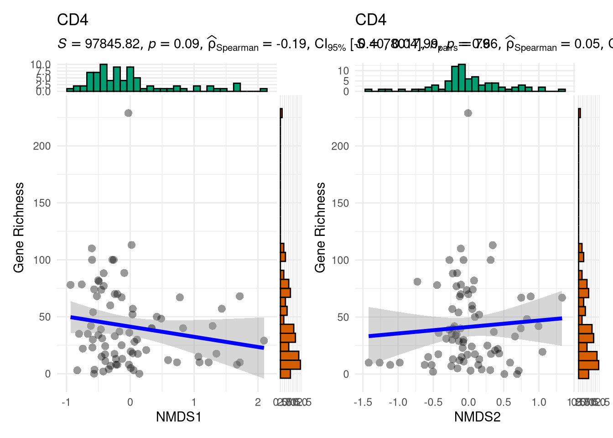
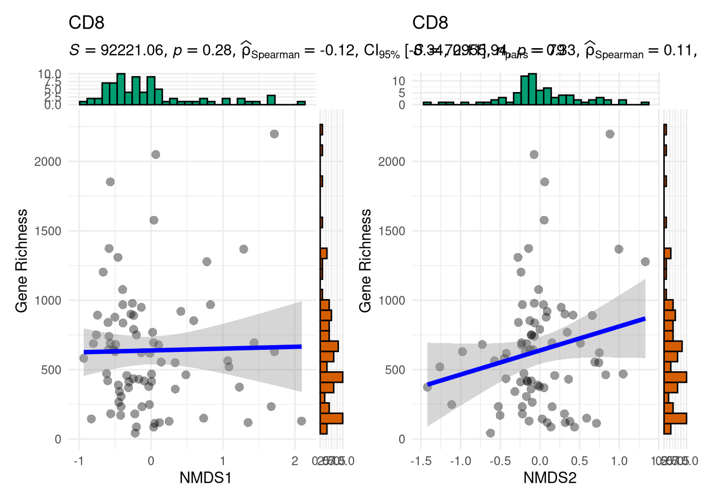
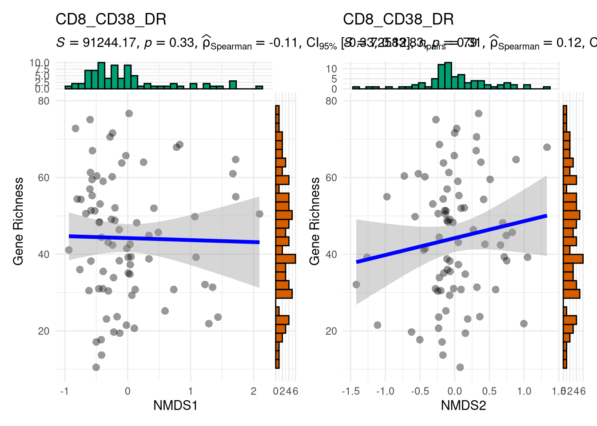
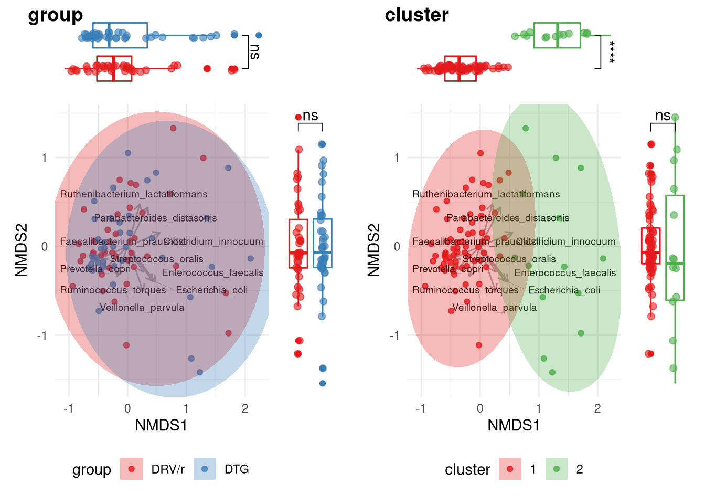
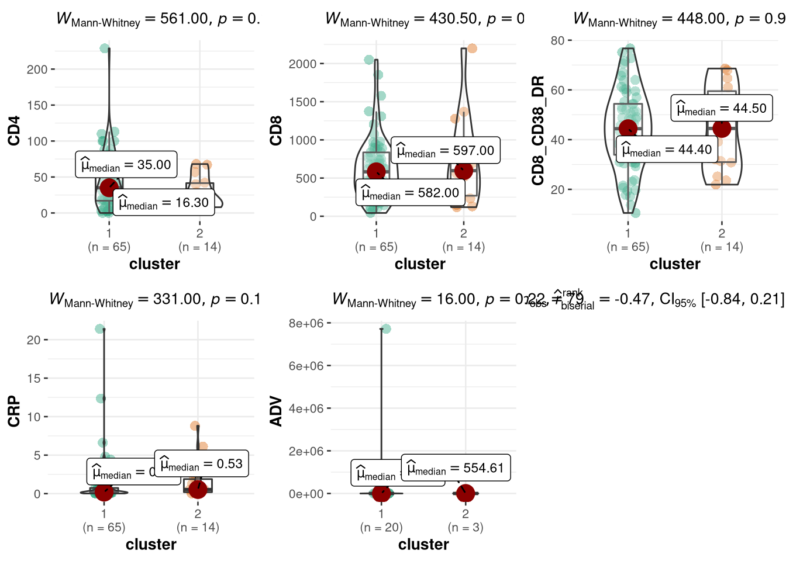
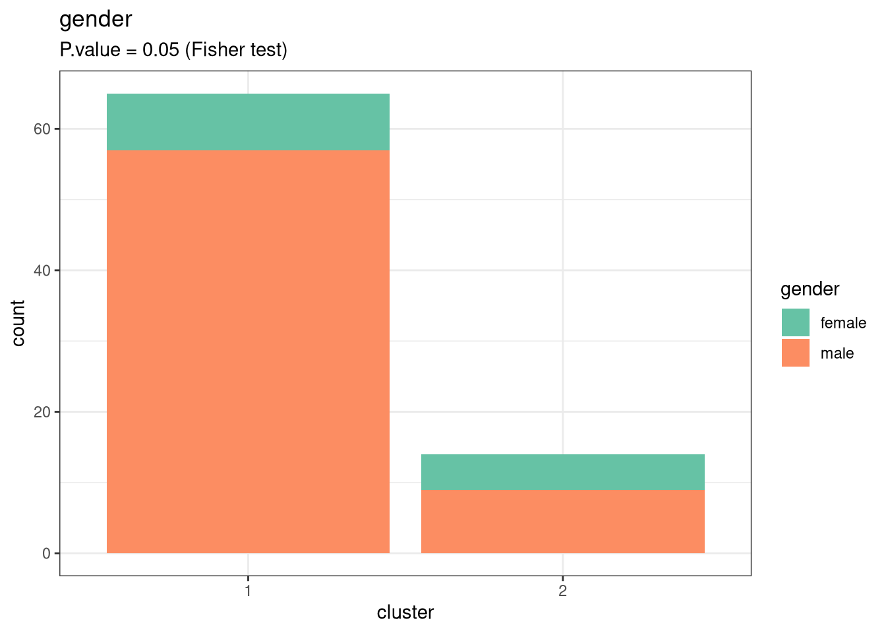
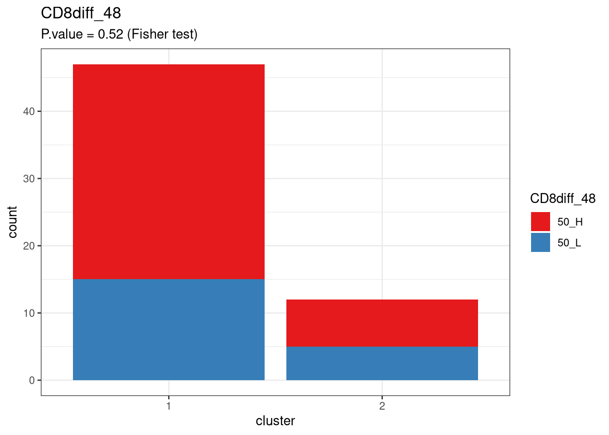
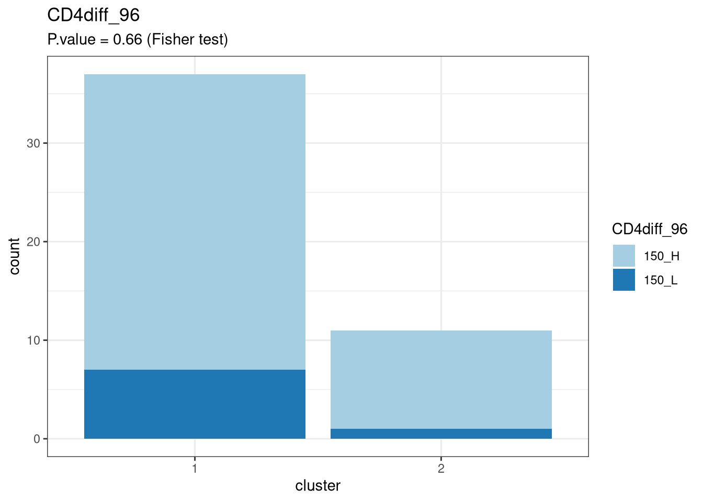
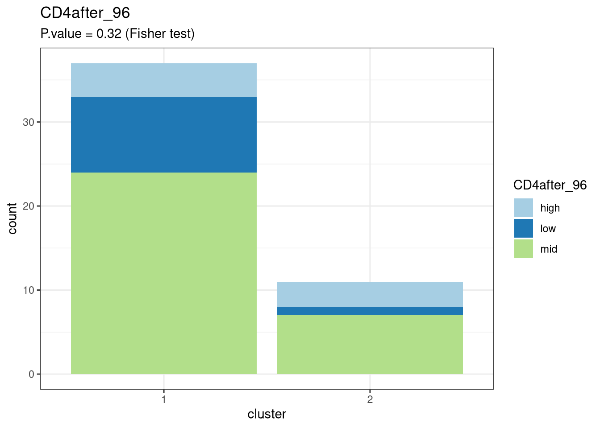
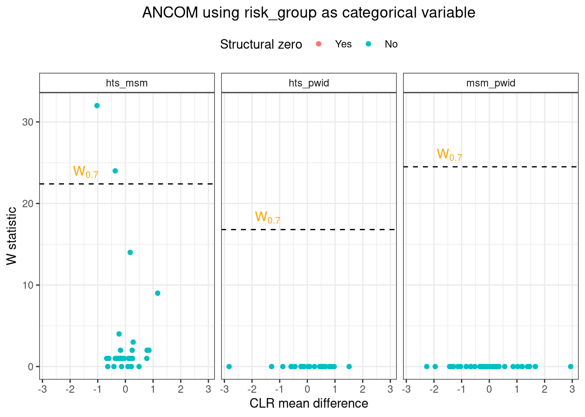

Baseline microbiome vs Immune response
Marc Noguera
3/29/2022
Last updated: 2022-04-28
Checks: 6 1
Knit directory: advanz4/
This reproducible R Markdown analysis was created with workflowr (version 1.7.0). The Checks tab describes the reproducibility checks that were applied when the results were created. The Past versions tab lists the development history.
The R Markdown file has unstaged changes. To know which version of the R Markdown file created these results, you’ll want to first commit it to the Git repo. If you’re still working on the analysis, you can ignore this warning. When you’re finished, you can run wflow_publish to commit the R Markdown file and build the HTML.
Great job! The global environment was empty. Objects defined in the global environment can affect the analysis in your R Markdown file in unknown ways. For reproduciblity it’s best to always run the code in an empty environment.
The command set.seed(20211203) was run prior to running the code in the R Markdown file. Setting a seed ensures that any results that rely on randomness, e.g. subsampling or permutations, are reproducible.
Great job! Recording the operating system, R version, and package versions is critical for reproducibility.
Nice! There were no cached chunks for this analysis, so you can be confident that you successfully produced the results during this run.
Great job! Using relative paths to the files within your workflowr project makes it easier to run your code on other machines.
Great! You are using Git for version control. Tracking code development and connecting the code version to the results is critical for reproducibility.
The results in this page were generated with repository version 2d56276. See the Past versions tab to see a history of the changes made to the R Markdown and HTML files.
Note that you need to be careful to ensure that all relevant files for the analysis have been committed to Git prior to generating the results (you can use wflow_publish or wflow_git_commit). workflowr only checks the R Markdown file, but you know if there are other scripts or data files that it depends on. Below is the status of the Git repository when the results were generated:
Ignored files:
Ignored: .RData
Ignored: .Rhistory
Ignored: .Rproj.user/
Ignored: analysis/.Rhistory
Ignored: data/mre.rds
Untracked files:
Untracked: Metadata/2022_04_28_clean_metadata_LIMS.csv
Unstaged changes:
Modified: analysis/310_IGC_analysis.Rmd
Modified: analysis/320_Beta_Diversity.Rmd
Modified: analysis/335_BLMicrobiome_vs_ImmuneResponse.Rmd
Modified: output/mre_data/CatalogMapping/IGC/lmm/lmm_time_point_by_group.pdf
Note that any generated files, e.g. HTML, png, CSS, etc., are not included in this status report because it is ok for generated content to have uncommitted changes.
These are the previous versions of the repository in which changes were made to the R Markdown (analysis/335_BLMicrobiome_vs_ImmuneResponse.Rmd) and HTML (docs/335_BLMicrobiome_vs_ImmuneResponse.html) files. If you’ve configured a remote Git repository (see ?wflow_git_remote), click on the hyperlinks in the table below to view the files as they were in that past version.
| File | Version | Author | Date | Message |
|---|---|---|---|---|
| Rmd | 2d56276 | cblazquez | 2022-04-28 | Added ANCOM to basal DA |
| html | 2d56276 | cblazquez | 2022-04-28 | Added ANCOM to basal DA |
| Rmd | 8bc62ca | cblazquez | 2022-04-20 | Fixed problem that arose when incorporating Adenovirus counts to metadata. |
| Rmd | e1f702e | cblazquez-irsi | 2022-04-19 | added NMDS section to basal study |
| html | e1f702e | cblazquez-irsi | 2022-04-19 | added NMDS section to basal study |
| Rmd | 9beba4f | cblazquez-irsi | 2022-04-19 | conflict solved on BL_Microbiome.Rmd |
| Rmd | f213c10 | cblazquez-irsi | 2022-04-19 | reworked basal analysis |
| Rmd | 0527e88 | cblazquez | 2022-04-19 | Added buld_metadata.Rmd to analysis. Added MetadataManagement to .gitignore |
| Rmd | 8eaf17d | cblazquez | 2022-04-05 | improved deltaCD4/CD8/ratio plots and checked missing samples in 335_BLMicrobiome.Rmd |
| html | 8eaf17d | cblazquez | 2022-04-05 | improved deltaCD4/CD8/ratio plots and checked missing samples in 335_BLMicrobiome.Rmd |
| Rmd | 93ba24c | cblazquez | 2022-04-05 | added delta CD4/CD8 density plot to 335_BLMicrobiome.RMd |
| html | 93ba24c | cblazquez | 2022-04-05 | added delta CD4/CD8 density plot to 335_BLMicrobiome.RMd |
| Rmd | a3e13cc | cblazquez | 2022-04-04 | diversity comparisons between CD4delta and microbiome at basal (335_BLMicrobiome…RMD) |
| html | c20090b | cblazquez | 2022-04-01 | Compiled taxa ranking html + several bug fixes |
| Rmd | 1930f16 | Marc Noguera-Julian | 2022-03-29 | Create 335_BLMicrobiome_vs_ImmuneResponse.Rmd |
# This chunk is only for executing a load_all on the reoot directory of the metar repository.
# This is a workaround for a bug present in metar::filter_samples in which fails to find an
# inherited method for fun_input(), a step in filtering samples in the Gene Function Slot. This
# chunk will be removed as soon as this issue is solved.
devtools::load_all(here::here("../","WMGSPipeline"))suggested package selbal ✔suggested package DataExplorer ✔suggested package lme4 ✔suggested package merTools ✔# Load all function arguments should be the path to where metar is installed. Change it
# accordingly.# mymre <- here::here("data","mre.rds") %>%
# readRDS(.)
mymre <- aws.s3::s3readRDS(bucket = "s3://mistral-wp6-advanz4", object = "metagenome/WMGS/MREObject.rds")
# metadata <-get_meta(mymre)
metadata <- here::here("Metadata", "2022_04_27_clean_metadata_LIMS.csv") %>%
read.csv() %>%
column_to_rownames("SampleID") %>%
mutate(SampleID = rownames(.))
cat_df <-
here::here("Metadata", "CategoricalVariables.txt") %>%
read.delim(., header = T)
cat_vector <- cat_df %>%
pull(CategoricalVariable)
long_var <- here::here("Metadata", "LongitudinalVariables.txt") %>%
read.delim(., header = T) %>%
pull(LongitudinalVariable)
id_var <- here::here("Metadata", "LongitudinalVariables.txt") %>%
read.delim(., header = T) %>%
pull(LinkVariable)
num_var <- here::here("Metadata", "NumericalVariables.txt") %>%
read.delim(., header = T) %>%
pull(NumericalVariable)#### This chunk is for updating the mre internally as new variables come out. Once the final mre is done this chunk will be removed.
mymre <- filter_samples(mre = mymre, sample_ids = metadata$SampleID)
mymre@metadata@metadata_df <- as.tibble(metadata)
mymre@taxa@metaphlan@phyloseq@sam_data <- metadata %>%
phyloseq::sample_data(.)
mymre@taxa@metaphlan@phyloseq_sec@sam_data <- metadata %>%
phyloseq::sample_data(.)
mymre@metadata@categorical_vals <- here::here("Metadata", "CategoricalVariables.txt") %>%
read.delim(., header = T) %>%
tibble()
mymre@metadata@numeric_vals <- here::here("Metadata", "NumericalVariables.txt") %>%
read.delim(., header = T) %>%
tibble()
mymre@metadata@longitudinal_vals <- here::here("Metadata", "LongitudinalVariables.txt") %>%
read.delim(., header = T) %>%
tibble()basal_meta <- metadata %>%
filter(time_point == 0)
basal_mre <- filter_samples(mre = mymre, sample_ids = basal_meta$SampleID)
# basal_mre@metadata@categorical_vals <-remove_cat(basal_mre, "CD4diff_96")
# cat_vector %>%
# set_names() %>%
# map_chr(~{
# metadata %>%
# filter(time_point == 0) %>%
# pull(!!sym(.x)) %>%
# unique() %>%
# length()
# })Baseline differences in microbiome
Alpha diversity
GR <- get_diversity(mymre, type = "igc", res_slot = "dataTable")
Threshold <- GR %>%
dplyr::select(SampleID, NumberMappedReads) %>%
unique() %>%
summarise(Q = quantile(NumberMappedReads,0.02)) %>% ### Again, you are using the full data table to calculate percentiles. This is wrong.
as.numeric()
richness_df <-
GR %>%
filter(ReadCountReal >= Threshold) %>% ### Get the Mapped Read count (per-sample) just above the threshold
group_by(SampleID) %>%
summarise(across(everything(), min)) %>%
ungroup() %>%
select(SampleID, GeneNumber) %>%
left_join(., metadata, by="SampleID") %>%
select(id_var = !!sym(id_var),
long_var = !!sym(long_var),
cat_vector,
GeneNumber) %>%
filter(long_var == 0)
# cat_vector %>%
# set_names() %>%
# map(function(cat_var){
# richness_df %>%
# dplyr::select(id_var,
# cat_var = !!sym(cat_var),
# GeneNumber) %>%
# filter(!is.na(cat_var)) %>%
# ggplot(., aes(x=cat_var, y=GeneNumber, fill = cat_var))+
# geom_violin(draw_quantiles = T) +
# geom_boxplot(fill="lightgrey", width=0.5, na.rm=T) +
# geom_point() +
# scale_fill_brewer(palette="Set1") +
# ggpubr::stat_compare_means(method="wilcox",label = "p.signif", hide.ns = T) +
# theme_bw() +
# labs(fill = cat_var)
#
# })
plotlist <- cat_vector %>%
set_names() %>%
map(function(cat_var){
richness_df %>%
dplyr::select(id_var,
cat_var = !!sym(cat_var),
GeneNumber) %>%
filter(!is.na(cat_var)) %>%
ggstatsplot::ggbetweenstats(
data = .,
x = cat_var,
y = GeneNumber,
bf.message = FALSE,
type = "nonparametric",
pairwise.comparisons = T,
xlab = cat_var,
ggtheme = ggplot2::theme_bw()
)
})No differences in basal Gene richness were found between patients with an increase of CD4 higher than 50 counts/ul and whose with lower increase. The same could be observed in CD8 counts.
ids <- metadata %>%
dplyr::group_by(record_id) %>%
dplyr::filter(time_point %in% c(0,48)) %>%
dplyr::filter(!is.na(CD4)) %>%
dplyr::filter(!is.na(CD8)) %>%
dplyr::arrange(time_point) %>%
dplyr::summarise(n=n()) %>%
dplyr::filter(n==2) %>%
dplyr::pull(record_id)
deltas <- metadata %>%
# dplyr::filter(record_id %in% ids) %>%
dplyr::filter(time_point %in% c(0,48,96)) %>%
dplyr::select(record_id, time_point,CD4,CD8) %>%
dplyr::mutate(ratio = CD4/CD8) %>%
dplyr::group_by(record_id) %>%
dplyr::arrange(record_id,time_point) %>%
tidyr::pivot_wider(id_cols = record_id, names_from= time_point, values_from = c(CD4,CD8, ratio)) %>%
dplyr::mutate(
deltaCD4_48 = CD4_48 - CD4_0,
deltaCD8_48 = CD8_48 - CD8_0,
deltaCD4_96 = CD4_96 - CD4_0,
deltaCD8_96 = CD8_96 - CD8_0,
deltaratio_48 = ratio_48 - ratio_0,
deltaratio_96 = ratio_96 - ratio_0) %>%
dplyr::select(record_id, contains("delta"))
deltas %>%
pivot_longer(cols=c(deltaCD4_48,deltaCD8_48,deltaCD4_96,deltaCD8_96, deltaratio_48, deltaratio_96)) %>%
mutate(term = str_remove_all(name, "delta|_48|_96"),
tp = str_remove_all(name, ".*(?<=_)")) %>%
ggplot(., aes(color=tp)) +
geom_density(aes(x=value), alpha=0.4) +
facet_wrap(~ term, scales="free", ncol = 2) +
# geom_density(data=pivot_longer(cols=c(deltaCD4,deltaCD8)),aes(x=value), alpha=0.4) +
theme_bw() +
scale_color_brewer(palette = "Set1")+
labs(color="week")
deltas %>%
select(contains("delta")) %>%
colnames() %>%
set_names() %>%
map(~{
summary(deltas[,.x])
})$record_id
record_id
Length:79
Class :character
Mode :character
$deltaCD4_48
deltaCD4_48
Min. : 17.0
1st Qu.:133.6
Median :189.0
Mean :219.9
3rd Qu.:300.0
Max. :683.0
NA's :20
$deltaCD8_48
deltaCD8_48
Min. :-743.6
1st Qu.: -19.5
Median : 311.0
Mean : 282.5
3rd Qu.: 521.5
Max. :1975.0
NA's :20
$deltaCD4_96
deltaCD4_96
Min. : 90.0
1st Qu.: 177.5
Median : 250.7
Mean : 304.7
3rd Qu.: 340.5
Max. :1210.0
NA's :31
$deltaCD8_96
deltaCD8_96
Min. :-748.0
1st Qu.:-110.0
Median : 203.6
Mean : 244.3
3rd Qu.: 484.8
Max. :2963.0
NA's :31
$deltaratio_48
deltaratio_48
Min. :0.000655
1st Qu.:0.123930
Median :0.188536
Mean :0.389095
3rd Qu.:0.286597
Max. :8.837443
NA's :20
$deltaratio_96
deltaratio_96
Min. :0.0176
1st Qu.:0.2120
Median :0.2724
Mean :0.3537
3rd Qu.:0.4544
Max. :1.2042
NA's :31 The last piece of output (summaries) tell there is a great ammount of missing data. This is due to a combination of many patients missing a sample and a few not having entries for analytical data:
no0 <- metadata %>%
filter(!record_id %in% metadata[metadata$time_point == 0, ]$record_id) %>%
pull(record_id)
##patients without lymphocite data but with microbiome sample
no48_CD4 <- metadata %>%
filter(is.na(CD4) ) %>%
filter(time_point == 48) %>%
pull(record_id)
no48_CD8 <- metadata %>%
filter(is.na(CD8) & !is.na(SampleID)) %>%
filter(time_point == 48) %>%
pull(record_id)
no96_CD4 <- metadata %>%
filter(is.na(CD4)& !is.na(SampleID)) %>%
filter(time_point == 96) %>%
pull(record_id)
no96_CD8 <- metadata %>%
filter(is.na(CD8)& !is.na(SampleID)) %>%
filter(time_point == 96) %>%
pull(record_id)
# patients without sample
noS48 <- metadata %>%
filter(!record_id %in% metadata[metadata$time_point == 48, ]$record_id) %>%
pull(record_id)
noS96 <- metadata %>%
filter(!record_id %in% metadata[metadata$time_point == 96, ]$record_id) %>%
pull(record_id)
totalMissing_CD4_48 <- length(unique(c(no0, no48_CD4, noS48)))
totalMissing_CD4_96 <- length(unique(c(no0,no96_CD4, noS96)))
totalMissing_CD8_48 <- length(unique(c(no0, no48_CD8, noS48)))
totalMissing_CD8_96 <- length(unique(c(no0,no96_CD8, noS96)))
totalMissing_CD4_48[1] 20totalMissing_CD4_96[1] 31totalMissing_CD8_96[1] 31totalMissing_CD8_96[1] 31Adding the different kind of missing data checks out with the summaries. The biggest issue came with patients not having no sample whatsoever for such timepoints. Of which: 25 didn’t have a basal sample, 22 didnt have sample for week 48 and 30 for week 96.
delta CD4 threshold was too low. To keep the study clinically interpretable We’ll do a cutoff as a round number around the mean. In this case <150/>150 according to the mITT design results of the parent study.
Basal gene richness vs delta CD4_48 as continuous variables
Microbiome structure at basal
basal_mre <- metar::metaphlan_nmds(basal_mre, tax_level="Species")nmdscor <- basal_mre@taxa@metaphlan@nmds$Species$top_50$numeric
ggpubr::ggarrange(plotlist = nmdscor, ncol=2)$`1`
| Version | Author | Date |
|---|---|---|
| 2d56276 | cblazquez | 2022-04-28 |
$`2`
| Version | Author | Date |
|---|---|---|
| 2d56276 | cblazquez | 2022-04-28 |
$`3`
| Version | Author | Date |
|---|---|---|
| 2d56276 | cblazquez | 2022-04-28 |
attr(,"class")
[1] "list" "ggarrange"group <- basal_mre@taxa@metaphlan@nmds$Species$top_50$categorical$group &
scale_color_brewer(palette="Set1") &
scale_fill_brewer(palette = "Set1")
cluster <- basal_mre@taxa@metaphlan@nmds$Species$top_50$categorical$cluster
ggpubr::ggarrange(group,cluster, labels = c("group", "cluster"))
NMDS shows no basal significant differences per group for either com,ponent. An unsupervised clustering created 2 well differentiated groups. While ADONIS per cluster was significant, we’ll look whether the numerical variables have something to do with them.
| id | Df | SumsOfSqs | MeanSqs | F.Model | R2 | Pr..F. |
|---|---|---|---|---|---|---|
| group | 1 | 0.2320561 | 0.2320561 | 0.7569076 | 0.0110085 | 0.797 |
| risk_group | 2 | 0.8593023 | 0.4296512 | 1.4219349 | 0.0419179 | 0.053 |
| center | 5 | 1.6094885 | 0.3218977 | 1.0580959 | 0.0763522 | 0.302 |
| gender | 1 | 0.8309639 | 0.8309639 | 2.7905580 | 0.0394199 | 0.002 |
| ethnic_group | 4 | 1.1853854 | 0.2963463 | 0.9819328 | 0.0578222 | 0.508 |
| CD4diff_48 | 1 | 0.3718115 | 0.3718115 | 1.1770855 | 0.0202328 | 0.239 |
| CD8diff_48 | 1 | 0.3253300 | 0.3253300 | 1.0272818 | 0.0177034 | 0.374 |
| CD4after_48 | 2 | 0.8412615 | 0.4206307 | 1.3433005 | 0.0457788 | 0.083 |
| CD8after_48 | 2 | 0.9081250 | 0.4540625 | 1.4556165 | 0.0494173 | 0.068 |
| CD4diff_96 | 1 | 0.3135775 | 0.3135775 | 0.9763171 | 0.0207832 | 0.430 |
| CD8diff_96 | 1 | 0.1747594 | 0.1747594 | 0.5390451 | 0.0115826 | 0.975 |
| CD4after_96 | 2 | 0.7449666 | 0.3724833 | 1.1686298 | 0.0493746 | 0.205 |
| CD8after_96 | 1 | 0.4311689 | 0.4311689 | 1.3532056 | 0.0285769 | 0.138 |
| cluster | 1 | 2.6024052 | 2.6024052 | 9.5773020 | 0.1234550 | 0.001 |
NMDS correlation with numerical variables
basal_mre@taxa@metaphlan@nmds$Species$top_50$cluster_numeric %>%
ggpubr::ggarrange(plotlist=.)
| Version | Author | Date |
|---|---|---|
| 2d56276 | cblazquez | 2022-04-28 |
Categorical variables vs unsupervised clustering
basal_mre@taxa@metaphlan@nmds$Species$top_50$cluster_categorical %>%
names() %>%
set_names() %>%
map(~{
df <-
basal_mre@taxa@metaphlan@nmds$Species$top_50$cluster_categorical %>%
pluck(.x) %>%
pluck("data") %>%
filter(!is.na(!!sym(.x)))
pal <- cat_df %>%
filter(CategoricalVariable == .x) %>%
pull(PaletteName)
test <- df %>%
dplyr::select(!!sym(.x), cluster) %>%
table() %>%
as.matrix() %>%
fisher.test(df) %>%
pluck("p.value") %>%
as.numeric() %>%
round(.,2)
plt <-
df %>%
ggplot(., aes(x = as.factor(cluster),fill=!!sym(.x)))+
geom_bar(stat="count") +
theme_bw() +
labs(x="cluster",
title=.x,
subtitle = glue::glue("P.value = {test} (Fisher test)")) +
scale_fill_brewer(palette = pal)
}) $group
$risk_group
$center
$gender
$ethnic_group
$CD4diff_48
$CD8diff_48
$CD4after_48
$CD8after_48
$CD4diff_96
$CD8diff_96
$CD4after_96
$CD8after_96
| Version | Author | Date |
|---|---|---|
| 2d56276 | cblazquez | 2022-04-28 |
| Version | Author | Date |
|---|---|---|
| 2d56276 | cblazquez | 2022-04-28 |
| Version | Author | Date |
|---|---|---|
| 2d56276 | cblazquez | 2022-04-28 |

| Version | Author | Date |
|---|---|---|
| 2d56276 | cblazquez | 2022-04-28 |

| Version | Author | Date |
|---|---|---|
| 2d56276 | cblazquez | 2022-04-28 |
| Version | Author | Date |
|---|---|---|
| 2d56276 | cblazquez | 2022-04-28 |

| Version | Author | Date |
|---|---|---|
| 2d56276 | cblazquez | 2022-04-28 |
| Version | Author | Date |
|---|---|---|
| 2d56276 | cblazquez | 2022-04-28 |
| Version | Author | Date |
|---|---|---|
| 2d56276 | cblazquez | 2022-04-28 |

| Version | Author | Date |
|---|---|---|
| 2d56276 | cblazquez | 2022-04-28 |
| Version | Author | Date |
|---|---|---|
| 2d56276 | cblazquez | 2022-04-28 |

| Version | Author | Date |
|---|---|---|
| 2d56276 | cblazquez | 2022-04-28 |
The variabe correspoinding to the change in CD4 counts after 96 weeks CD4diff_96 was dropped due to having only one value. This means all patients had an increase of CD4>50, which breaks any comparison we try to make.
DIfferential Abundance
We’ll look into which genera are more correlated per group at baseline. We’ll perform both classic and compositional approaches.
phy_basal <- get_phyloseq(basal_mre, type = "metaphlan") %>%
phyloseq::filter_taxa(., function(x) sum(x > 0) > (0.3*length(x)), TRUE)
otu_df <-
phyloseq::otu_table(phy_basal) %>%
t() %>%
as.data.frame() %>%
setNames(phyloseq::tax_table(phy_basal)[,"Species"]) %>%
rownames_to_column("SampleID") %>%
setNames(.,str_remove_all(colnames(.), "\\[")) %>%
setNames(.,str_remove_all(colnames(.), "\\]"))
basal_meta <- get_meta(basal_mre)
stat_list <-
cat_vector %>%
purrr::set_names() %>%
purrr::map(function(cv) {
otu_df %>%
dplyr::select(-SampleID) %>%
colnames() %>%
purrr::set_names() %>%
purrr::map_dfr(function(sp) {
df <-
otu_df %>%
dplyr::select(SampleID, !!sym(sp)) %>%
dplyr::left_join(basal_meta[, c("SampleID", cv), drop = F], by = "SampleID")
if (length(unique(df[, cv])) == 2) {
test <- df %>%
rstatix::wilcox_test(., formula(paste(sp, "~", cv)), paired = F) %>%
dplyr::mutate(method = "Wilcoxon")
} else{
test <- df %>%
rstatix::kruskal_test(., formula(paste(sp, "~", cv))) %>%
dplyr::mutate(method = "Kruskal-Wallis")
}
}) %>%
dplyr::mutate(p.adj = p.adjust(.$p, "BH")) %>%
dplyr::filter(p.adj < 0.05)
}) %>%
purrr::keep(., ~nrow(.) > 0)
stat_list %>%
map(~{
kableExtra::kable(.x, format = "markdown")
})$risk_group
|.y. | n| statistic| df| p|method | p.adj|
|:--------------------------|--:|---------:|--:|--------:|:--------------|---------:|
|Parabacteroides_distasonis | 70| 15.62025| 2| 0.000406|Kruskal-Wallis | 0.0224280|
|Roseburia_sp_CAG_471 | 70| 13.01657| 2| 0.001490|Kruskal-Wallis | 0.0331525|
|Anaerotruncus_colihominis | 70| 14.37569| 2| 0.000756|Kruskal-Wallis | 0.0224280|
|Clostridium_innocuum | 70| 14.59802| 2| 0.000676|Kruskal-Wallis | 0.0224280|
$gender
|.y. |group1 |group2 | n1| n2| statistic| p|method | p.adj|
|:-----------------------------------|:------|:------|--:|--:|---------:|--------:|:--------|---------:|
|Eggerthella_lenta |female |male | 10| 60| 480.0| 0.001280|Wilcoxon | 0.0150311|
|Gordonibacter_pamelaeae |female |male | 10| 60| 481.5| 0.000919|Wilcoxon | 0.0150311|
|Slackia_isoflavoniconvertens |female |male | 10| 60| 119.5| 0.002040|Wilcoxon | 0.0181560|
|Prevotella_copri |female |male | 10| 60| 113.5| 0.001520|Wilcoxon | 0.0150311|
|Prevotella_sp_CAG_279 |female |male | 10| 60| 154.0| 0.008170|Wilcoxon | 0.0484753|
|Prevotella_sp_CAG_520 |female |male | 10| 60| 140.0| 0.003490|Wilcoxon | 0.0282373|
|Prevotella_stercorea |female |male | 10| 60| 120.0| 0.001370|Wilcoxon | 0.0150311|
|Parabacteroides_distasonis |female |male | 10| 60| 466.0| 0.004470|Wilcoxon | 0.0331525|
|Ruminococcus_gnavus |female |male | 10| 60| 466.5| 0.001310|Wilcoxon | 0.0150311|
|Dorea_formicigenerans |female |male | 10| 60| 135.0| 0.005420|Wilcoxon | 0.0371062|
|Dorea_longicatena |female |male | 10| 60| 137.5| 0.006230|Wilcoxon | 0.0396050|
|Anaerotruncus_colihominis |female |male | 10| 60| 474.0| 0.000679|Wilcoxon | 0.0150311|
|Clostridium_innocuum |female |male | 10| 60| 504.0| 0.000216|Wilcoxon | 0.0150311|
|Erysipelatoclostridium_ramosum |female |male | 10| 60| 468.0| 0.000638|Wilcoxon | 0.0150311|
|Phascolarctobacterium_succinatutens |female |male | 10| 60| 120.0| 0.001370|Wilcoxon | 0.0150311|The only categoricalvariables with Differential abundance at basal are Gender and Risk group. This is hardly surprising as microbiome differences between gender and sexual orientations have been widely reported. But that also means no significant signal could be detected that is significant to this study. More specifically, there is no bacterial signal that may predict increase of CD4/CD8 after 48-96 weeks of treatment.
phy_c<- basal_mre@taxa@metaphlan@phyloseq_sec %>%
phyloseq::filter_taxa(., function(x) sum(x > 0) > (0.3*length(x)), TRUE)
basal_mre@taxa@metaphlan@phyloseq_sec <- phy_c
basal_mre <- metar::metaphlan_ancom(mre = basal_mre, tax_level = "Species", save_files = F)
res_list <- basal_mre@taxa@metaphlan@ancom$Species %>%
map(~{
.x %>%
pluck("stats") %>%
filter(detected_0.7 == TRUE)
}) %>%
purrr::keep(., ~nrow(.) > 0)
basal_mre@taxa@metaphlan@ancom$Species[[names(res_list)]]$plot
| Version | Author | Date |
|---|---|---|
| 2d56276 | cblazquez | 2022-04-28 |
res_list$risk_group
taxa_id W detected_0.9 detected_0.8 detected_0.7
1 Parabacteroides_distasonis 32 TRUE TRUE TRUE
2 Flavonifractor_plautii 24 FALSE FALSE TRUE
detected_0.6 mean_qval median_qval fisher_qval clr_mean_diff
1 TRUE 0.03617902 0.001680889 4.772824e-49 -1.0275269
2 TRUE 0.08000107 0.023328846 1.363693e-20 -0.3682635
structural_zero x_label y_label comparison cat_var
1 No -1.027527 22.4 hts_msm risk_group
2 No -1.027527 22.4 hts_msm risk_groupANCOM was even more astringent and ony found 2 significant species between hts and msm.
sessionInfo()R version 4.0.5 (2021-03-31)
Platform: x86_64-redhat-linux-gnu (64-bit)
Running under: Fedora 34 (Workstation Edition)
Matrix products: default
BLAS/LAPACK: /usr/lib64/libflexiblas.so.3.1
locale:
[1] LC_CTYPE=en_US.UTF-8 LC_NUMERIC=C
[3] LC_TIME=en_US.UTF-8 LC_COLLATE=en_US.UTF-8
[5] LC_MONETARY=en_US.UTF-8 LC_MESSAGES=en_US.UTF-8
[7] LC_PAPER=en_US.UTF-8 LC_NAME=C
[9] LC_ADDRESS=C LC_TELEPHONE=C
[11] LC_MEASUREMENT=en_US.UTF-8 LC_IDENTIFICATION=C
attached base packages:
[1] stats graphics grDevices utils datasets methods base
other attached packages:
[1] metar_0.1.5 testthat_3.1.4 patchwork_1.1.1 RColorBrewer_1.1-3
[5] forcats_0.5.1 stringr_1.4.0 dplyr_1.0.8 purrr_0.3.4
[9] readr_2.1.2 tidyr_1.2.0 tibble_3.1.6 ggplot2_3.3.5
[13] tidyverse_1.3.1
loaded via a namespace (and not attached):
[1] estimability_1.3 coda_0.19-4 bit64_4.0.5
[4] knitr_1.39 multcomp_1.4-19 wesanderson_0.3.6
[7] data.table_1.14.2 DataExplorer_0.8.2 generics_0.1.2
[10] BiocGenerics_0.36.1 cowplot_1.1.1 callr_3.7.0
[13] TH.data_1.1-1 usethis_2.1.5 future_1.25.0
[16] correlation_0.8.0 bit_4.0.4 tzdb_0.3.0
[19] bayesm_3.1-4 webshot_0.5.3 xml2_1.3.2
[22] lubridate_1.8.0 httpuv_1.6.5 assertthat_0.2.1
[25] WRS2_1.1-3 xfun_0.30 hms_1.1.1
[28] jquerylib_0.1.4 evaluate_0.15 promises_1.2.0.1
[31] DEoptimR_1.0-11 fansi_1.0.3 dbplyr_2.1.1
[34] readxl_1.4.0 igraph_1.3.1 DBI_1.1.2
[37] htmlwidgets_1.5.4 reshape_0.8.9 tensorA_0.36.2
[40] kSamples_1.2-9 stats4_4.0.5 Rmpfr_0.8-7
[43] paletteer_1.4.0 ellipsis_0.3.2 survcomp_1.40.0
[46] ggpubr_0.4.0 backports_1.4.1 insight_0.17.0
[49] permute_0.9-7 prismatic_1.1.0 compositions_2.0-4
[52] vctrs_0.4.1 Biobase_2.50.0 remotes_2.4.2
[55] here_1.0.1 abind_1.4-5 cachem_1.0.6
[58] withr_2.5.0 ggforce_0.3.3 aws.signature_0.6.0
[61] robustbase_0.95-0 vroom_1.5.7 emmeans_1.7.3
[64] vegan_2.6-2 prettyunits_1.1.1 svglite_2.1.0
[67] cluster_2.1.3 ape_5.6-2 crayon_1.5.1
[70] pkgconfig_2.0.3 SuppDists_1.1-9.7 labeling_0.4.2
[73] tweenr_1.0.2 nlme_3.1-157 statsExpressions_1.3.1
[76] pkgload_1.2.4 blme_1.0-5 devtools_2.4.3
[79] rlang_1.0.2 globals_0.14.0 lifecycle_1.0.1
[82] sandwich_3.0-1 survivalROC_1.0.3 selbal_0.1.0
[85] phyloseq_1.34.0 modelr_0.1.8 cellranger_1.1.0
[88] rprojroot_2.0.3 polyclip_1.10-0 datawizard_0.4.0
[91] Matrix_1.4-1 mc2d_0.1-21 carData_3.0-5
[94] Rhdf5lib_1.12.1 boot_1.3-28 zoo_1.8-10
[97] reprex_2.0.1 base64enc_0.1-3 whisker_0.4
[100] processx_3.5.3 viridisLite_0.4.0 PMCMRplus_1.9.4
[103] bootstrap_2019.6 parameters_0.17.0 KernSmooth_2.23-20
[106] rhdf5filters_1.2.1 Biostrings_2.58.0 workflowr_1.7.0
[109] multcompView_0.1-8 arm_1.12-2 parallelly_1.31.1
[112] rstatix_0.7.0 S4Vectors_0.28.1 ggsignif_0.6.3.9000
[115] rmeta_3.0 aws.s3_0.3.21 scales_1.2.0
[118] memoise_2.0.1 magrittr_2.0.3 plyr_1.8.7
[121] zlibbioc_1.36.0 compiler_4.0.5 kableExtra_1.3.4
[124] lme4_1.1-29 snakecase_0.11.0 cli_3.3.0
[127] ade4_1.7-19 XVector_0.30.0 listenv_0.8.0
[130] ps_1.7.0 MASS_7.3-57 mgcv_1.8-40
[133] ggside_0.2.0 tidyselect_1.1.2 stringi_1.7.6
[136] highr_0.9 yaml_2.3.5 ANCOM_2.2
[139] ggrepel_0.9.1 grid_4.0.5 sass_0.4.1
[142] tools_4.0.5 future.apply_1.9.0 parallel_4.0.5
[145] rstudioapi_0.13 foreach_1.5.2 logging_0.10-108
[148] git2r_0.30.1 janitor_2.1.0 gridExtra_2.3
[151] prodlim_2019.11.13 farver_2.1.0 digest_0.6.29
[154] lava_1.6.10 shiny_1.7.1 networkD3_0.4
[157] BWStest_0.2.2 Rcpp_1.0.8.3 car_3.0-12
[160] broom_0.8.0 performance_0.9.0 later_1.3.0
[163] httr_1.4.2 effectsize_0.6.0.1 colorspace_2.0-3
[166] rvest_1.0.2 brio_1.1.3 fs_1.5.2
[169] IRanges_2.24.1 splines_4.0.5 rematch2_2.1.2
[172] multtest_2.46.0 systemfonts_1.0.4 sessioninfo_1.2.2
[175] xtable_1.8-4 gmp_0.6-5 jsonlite_1.8.0
[178] nloptr_2.0.0 zeallot_0.1.0 R6_2.5.1
[181] broom.mixed_0.2.9.4 pillar_1.7.0 htmltools_0.5.2
[184] mime_0.12 glue_1.6.2 fastmap_1.1.0
[187] minqa_1.2.4 codetools_0.2-18 pkgbuild_1.3.1
[190] mvtnorm_1.1-3 furrr_0.2.3 utf8_1.2.2
[193] lattice_0.20-45 bslib_0.3.1 logger_0.2.2
[196] curl_4.3.2 survival_3.3-1 rmarkdown_2.14
[199] desc_1.4.1 biomformat_1.18.0 merTools_0.5.2
[202] munsell_0.5.0 rhdf5_2.34.0 iterators_1.0.14
[205] ggstatsplot_0.9.1 haven_2.5.0 reshape2_1.4.4
[208] gtable_0.3.0 bayestestR_0.11.5.1